Geomorph - Getting
Started
Starting
The menu bar
The window controlling the creation of a
new document
The toolbox
Organizing your Geomorph - Povray
work
A few advices before
the end of this section
Starting
If the installation worked fine, you should have a Geomorph icon  on
your desktop.
on
your desktop.
If it's not the case, you can start the program by typing geomorph
in a console, or under KDE, by typing geomorph in
the Atl-F2 dialog.
This is the layout of the Geomorph desktop:
You navigate through documents with the KDE or Gnome taskbar.
When you start Geomorph, only the menu bar is displayed at the top left
corner.
The menu bar
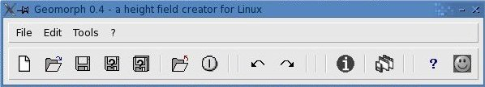
To start, click "Create a new document" . You'll get a control window on the left side
and a document window in the center.
Among the other buttons that you'll use often, I emphasize "save"
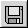 (strongly
recommended!), "undo" 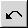
and "redo" 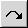 .
You can
read the description of each button by moving the mouse
cursor over it a few seconds.
Menus under File / Edit / Tools / ?
activate the same functions as the buttons do.
The creation window
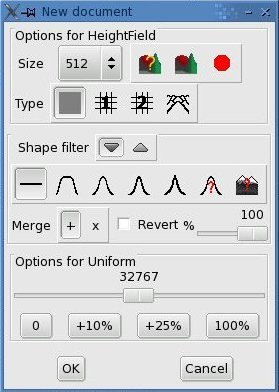
The creation window is "modal", meaning that you can't click anywhere
else when
it is active, even in the document window. This way, the creation
parameters cannot interfere with the other open
documents.
Icons 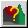 and
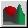 launch
Povray for testing the current height field. The first icon asks for
the *.pov scene to use. The second one uses
the default scene or the last chosen.
Click "OK" and the toolbox dialog replaces
the creation dialog.
The default is a "uniform" height field 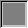 of a neutral gray shade. It can
be used as a canvas for drawing with the height field pen (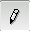->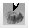), or as a
starting point for
adding noise or some kind of warping.
"Uniform"
height field over
which are drawn
"hills" (in the background) and a"depression" (in the foreground)
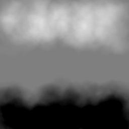 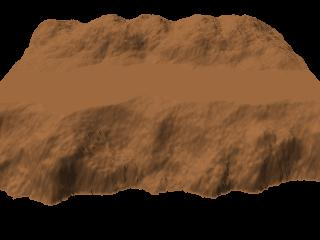
Try subdivisions 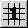 and 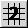 if you want classical terrains. Click repeatedly on
the "Refresh" button to change the pseudo-random seed and you'll see a
succession of distinct height fields generated with the same global
parameters. The FAQ explains the
differences between both subdivisions. Subdivision 2 provides a
frequency control (actually a wave length control specified in pixels).
"Subdivision 1" height
field
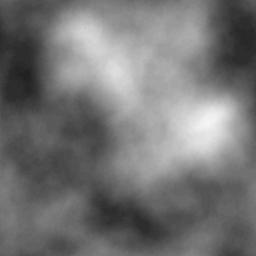 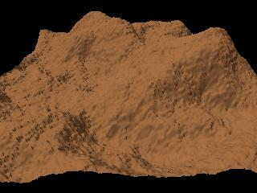
"Subdivision 2" height field
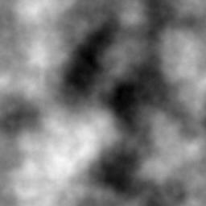 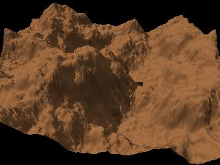
The progressive sum of surfaces  works by adding repeatedly simple surfaces
(primitives) of different sizes (or wave lengths). Usually, the
primitive surfaces are gaussian bells, but any height field already
open in Geomorph can be used as a building block.
works by adding repeatedly simple surfaces
(primitives) of different sizes (or wave lengths). Usually, the
primitive surfaces are gaussian bells, but any height field already
open in Geomorph can be used as a building block.
Hitting the seed "Refresh" button generates an image with a new
structure, as it does with subdivisions 1 and 2.
The huge "Activate" button must be clicked after any parameter change
other than the random seed.
"Progressive sum of
surfaces" height field
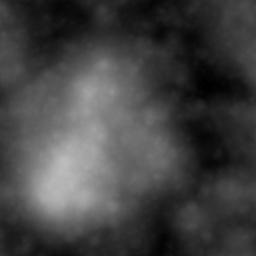 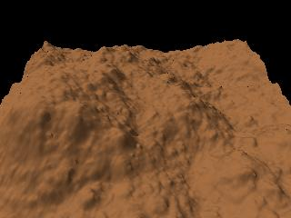
This height field is build with surfaces of all available wave
lengths in power of 2 sizes (256, 128, 64,
32, 16, 8, 4, 2 for a 256x256 terrain), displaced randomly.
The following height fields show how we can superimpose two wave
lengths (here 64 and 32 pixels) and move them randomly on the XZ ground
for starting a terrain.
"Progressive sum of
surfaces" height field
- with one wave length of 64 pixels
(terrain
256x256)
- XZ displacement and H displacement
set to 0
- density set to 60
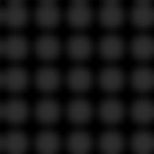 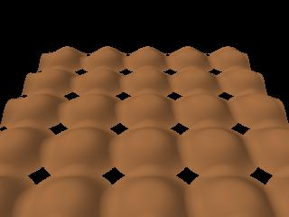
"Progressive sum of surfaces" height field
- wave lengths 64 + 32 (terrain
256x256)
- XZ displacement set to 50
- density set to 60
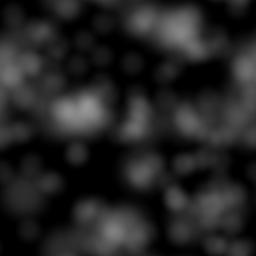 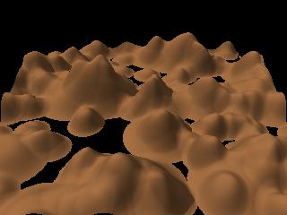
The "Shape filter" 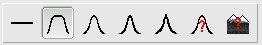 makes an "island" from your
height field. The same
function is available in the toolbox, so
you can wait to apply it.
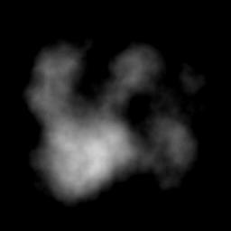 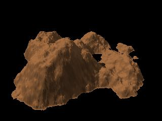
The toolbox
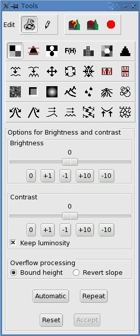
The toolbox is displayed with brightness / contrast 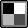 as the default
tool, from the "Filters and other transformations" 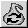 block.
Subdialogs depending on a tool or a pen are displayed in the same
window, unlike Gimp subdialogs, which are displayed in a
new window.
A tooltip is generally displayed for each tool icon if
you let the mouse cursor over it a few seconds. See the tools index for more details.
The window bottom contains control buttons,
allowing to accept the last results or to reset the document to its
previous state.
The current modification is automatically accepted when swapping
between documents, tools or between the "Filter and transform" mode and the "Draw"
mode 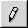 .
You can always undo the last accepted change
by clicking in the menu bar.
Organizing your Geomorp -
Povray work
When installing Geomorph, predefined Povray scene scripts are copied in
your /home/.../geomorph/
directory, which you can modify to fit your requirements if you are
familiar enough with Povray.
Heavily using Geomorph with Povray would rapidly fill this directory up
with tens of documents. Creating one directory for each project can
avoid this problem:
/home/.../geomorph/project1/...
A project directory should contain:
(1) The multiple versions of your height field.
(2) Copies of the Povray scripts that you modified, if you chose to do
so.
(3) "Secondary" height fields, like the "water maps" and
the background terrains used in some Povray scripts. Because these
secondary height fields have fixed names, for instance hf_water.png for a water map,
regardless of the main terrain, they should be created in separated
directories for distinct main height fields. The
table of predefined Povray scripts shows the related secondary
height fields, when it's the case.
(4) The pictures rendered by Povray, whose name is composed with a
prefix, usually _, followed by the name of the main height field.
Notice that there were inconsistencies in the way Geomorph versions
prior to 0.40 were managing directories.
A few advices before
the end of this section
- Save your documents frequently!
- In the toolbox window, some options display subdialogs
overflowing the desktop. Sometimes, you won't even see the
control buttons ("Accept", "Reset", and the like). Use the "hide
dialog" / "show dialog" buttons 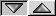 for masking the unused subdialogs.
- If you want to debug a Povray scene executed from Geomorph,
start Geomorph in a console, so that you can read the Povray messages.
Last revision January the 27th, 2007
Contact: Patrice St-Gelais
Back to the documentation index